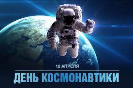
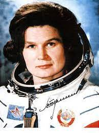
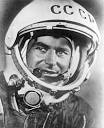

День космонавтики |
|
Первый полет человека в космос День космонавтики — отмечаемая сначала в СССР, а после в России и других странах постсоветского пространства 12 апреля дата, установленная в ознаменование первого полёта человека в космос.Узнать больше Первый полет женщины в космос 16 июня 1963 года первая в мире женщина-космонавт Валентина Терешкова совершила одиночный полет в космосУзнать больше Первый длительный полет Титов-Советский космонавт, первый человек, совершивший длительный космический полёт (более суток)Узнать больше |
Меню |
| Все права защищены (c) 2022 | |